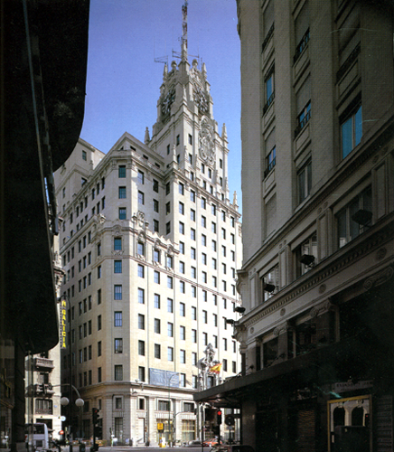

Proyectos
Lo que hacemos
- Ocio
- Deportivo
- C. Comerciales
- Corporativo
- Comunicaciones
- Oficinas
- Interiorismo
- Docente
- Residencial
- Urbanismo
- Otros

Fotografías
{kind=link}
{kind=link}
{kind=link}
{kind=link}
{kind=link}
{kind=link}
{kind=link}
{kind=link}
{kind=link}
{kind=link}
{kind=link}
{kind=link}
{kind=link}
{kind=link}
{kind=link}
{kind=link}
{kind=link}
{kind=link}
{kind=link}
{kind=link}
Edificio Telefónica Gran Vía
Proyecto de rehabilitación y reforma del edificio de Telefónica en la calle Gran Vía nº28, el cual constituye un punto de referencia en Madrid. Para llevar a cabo dicho trabajo se siguieron las siguientes pautas:
- Respeto por el edificio original
- Eliminación de todos los elementos que fueron ajenos al diseño original
- Recuperación y nueva valoración de los espacios interiores existentes.
- Reutilización de materiales ya empleados en el edificio: mármoles, piedra de Bateig, elementos de cerrajería, etc.
- Limitación del impacto externo respetando su concepción original.
- Adaptación del edificio buscando las ubicaciones más racionales
La superficie de actuación es de 32.790m²